Разложить многочлен на множители означает представить его в виде произведения двух или нескольких многочленов.
Примером разложения многочлена на множители является вынесение общего множителя за скобки, поскольку исходный многочлен обращается в произведение двух сомножителей, один из которых является одночленом, а другой многочленом.
Предварительные навыки-
- Разложение способом вынесения общего множителя за скобки
- Разложение способом группировки
- Разложение по формуле квадрата суммы двух выражений
- Разложение по формуле квадрата разности двух выражений
- Разложение по формуле куба суммы двух выражений
- Разложение по формуле куба разности двух выражений
- Разложение по формуле разности квадратов двух выражений
- Разложение по формуле сумме кубов двух выражений
- Разложение по формуле разности кубов двух выражений
- Разложение различными способами
- Задания для самостоятельного решения
Разложение многочлена на множители способом вынесения общего множителя за скобки
При вынесении общего множителя за скобки образуется произведение из двух сомножителей, один из которых является одночленом, а другой многочленом. Например:
\[6x + 3xy = 3x(2 + y)\]
В рамках изучения многочленов, одночлен принято считать многочленом, состоящим из одного члена. Поэтому, когда в многочлене выносится за скобки общий множитель, то говорят что исходный многочлен представлен в виде произведения многочленов.
В нашем примере многочлен 6x + 3xy был представлен в виде произведения многочленов 3x и (2 + y). По-другому говорят, что многочлен 6x + 3xy разложен на множители 3x и (2 + y)
Существуют также многочлены, в которых можно вынести за скобки такой общий множитель, который является двучленом. Например, рассмотрим многочлен 5a(x + y) + 7a(x + y). В этом многочлене общим множителем является двучлен (x + y). Вынесем его за скобки:
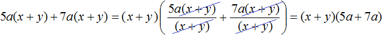
Разложение многочлена на множители способом группировки
Некоторые многочлены содержат группу членов, имеющих общий множитель. Такие группы можно заключать в скобки и далее выносить общий множитель за эти скобки. В результате получается разложение исходного многочлена на множители, которое называют разложением на множители способом группировки.
Рассмотрим следующий многочлен:
\[ax + ay + 3x + 3y\]
Члены ax и ay имеют общий множитель a. Выпишем эти члены и заключим их в скобки:
\[(ax + ay)\]
Далее в многочлене ax + ay + 3x + 3y члены 3x и 3y имеют общий множитель 3. Выпишем эти члены и тоже заключим их в скобки:
\[(3x + 3y)\]
Теперь соединим выражения (ax + ay) и (3x + 3y) знаком «плюс»
\[(ax + ay) + (3x + 3y)\]
В многочлене (ax + ay) вынесем за скобки общий множитель a, а в многочлене (3x + 3y) вынесем за скобки общий множитель 3. Делать это нужно в исходном выражении:
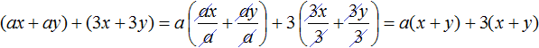
Далее замечаем, что двучлен (x + y) является общим множителем. Вынесем его за скобки. Продолжаем решение в исходном примере. В результате получим:
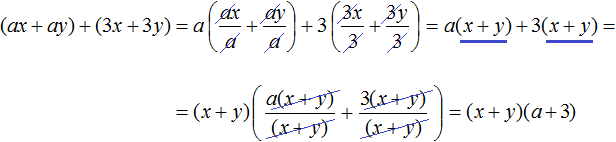
Запишем решение покороче, не расписывая подробно, как каждый член был разделен на общий множитель. Тогда решение получится более компактным:
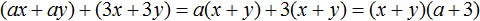
Чтобы проверить правильно ли мы разложили многочлен на множители, выполним умножение (x + y)(a + 3). Если мы всё сделали правильно, то получим многочлен ax + ay + 3x + 3y
\[(x + y)(a + 3) = ax + ay + 3x + 3y\]
Пример 2. Разложить многочлен 9x + ax − 9y − ay на множители способом группировки.
Члены 9x и −9y имеют общий множитель 9. А члены ax и −ay имеют общий множитель a. Сгруппируем их с помощью скобок, и объединим с помощью знака «плюс»
\[(9x - 9y) + (ax - ay)\]
В первой группе (9x − 9y) вынесем за скобки общий множитель 9. Во второй группе (ax − ay) вынесем за скобки за скобки общий множитель a
\[(9x - 9y) + (ax - ay) = 9(x - y) + a(x - y)\]
Далее вынесем за скобки двучлен (x − y)
\[(9x - 9y) + (ax - ay) = 9(x - y) + a(x - y) = (x - y)(9 + a)\]
Пример 3. Разложить многочлен ab − 3b + b2 − 3a на множители способом группировки.
Сгруппируем первый член ab с четвёртым членом −3a. А второй член −3b сгруппируем с третьим членом b2. Не забываем, что объединять группы нужно с помощью знака «плюс»
(ab − 3a) + (−3b + b2)
В первой группе вынесем за скобки общий множитель a, во второй группе — общий множитель b
(ab − 3a) + (−3b + b2) = a(b − 3) + b(−3 + b)
Во втором произведении b(−3 + b) в сомножителе (−3 + b) изменим порядок следования членов. Тогда получим b(b − 3)
(ab − 3a) + (−3b + b2) = a(b − 3) + b(b − 3)
Теперь вынесем за скобки общий множитель (b − 3)
(ab − 3a) + (−3b + b2) = a(b − 3) + b(b − 3) = (b − 3)(a + b)
Пример 4. Разложить многочлен x2y + x + xy2 + y + 2xy + 2 на множители способом группировки.
Сгруппируем первый член многочлена со вторым, третий с четвёртым, пятый с шестым:
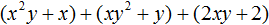
В первой группе вынесем за скобки общий множитель x, во второй группе — общий множитель y, в третьей группе — общий множитель 2
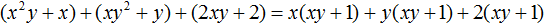
Далее замечаем, что многочлен (xy + 1) является общим множителем. Вынесем его за скобки:
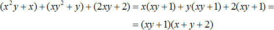
Разложение многочлена на множители по формуле квадрата суммы двух выражений
Формулы сокращённого умножения, которые мы рассматривали в прошлом уроке, можно применять для разложения многочленов на множители.
Вспомним, как выглядит формула квадрата суммы двух выражений:
(a + b)2 = a2 + 2ab + b2
Поменяем местами левую и правую часть, получим:
a2 + 2ab + b2 = (a + b)2
Левая часть этого равенства является многочленом, а правая часть — произведением многочленов, поскольку выражение (a + b)2 представляет собой перемножение двух сомножителей, каждый из которых равен многочлену (a + b).
Стало быть, если нам встретится выражение вида a2 + 2ab + b2, то мы можем представить его в виде произведения (a + b)(a + b). Иными словами, разложить на множители (a + b) и (a + b).
a2 + 2ab + b2 = (a + b)(a + b)
Пример 1. Разложить на множители многочлен 4x2 + 12xy + 9y2
Чтобы воспользоваться формулой a2 + 2ab + b2 = (a + b)2, нужно узнать чему в данном случае равна переменная a и чему равна переменная b.
Первый член многочлена 4x2 + 12xy + 9y2 является результатом возведения в квадрат одночлена 2x, поскольку (2x)2 = 4x2. Третий член 9y2 является результатом возведения в квадрат одночлена 3y, поскольку (3y)2 = 9y2, а член 12xy это есть удвоенное произведение членов 2x и 3y, то есть 2 × 2x × 3y = 12xy.
Очевидно, что переменная a в данном случае равна 2x, а переменная b равна 3y
\[a = 2x b = 3y\]
Тогда можно сделать вывод, что когда-то выражение 4x2 + 12xy + 9y2 выглядело в виде квадрата суммы (2x + 3y)2, но в результате применения формулы квадрата суммы оно обратилось в многочлен 4x2 + 12xy + 9y2. Наша задача — вернуть ему былую форму, то есть представить в виде (2x + 3y)2
4x2 + 12xy + 9y2 = (2x + 3y)2
А поскольку (2x + 3y)2 это произведение двух сомножителей, каждый из которых равен многочлену (2x + 3y), то исходный многочлен 4x2 + 12xy + 9y2 можно представить в виде разложения на множители (2x + 3y) и (2x + 3y)
4x2 + 12xy + 9y2 = (2x + 3y)(2x + 3y)
Полностью решение можно записать так:
4x2 + 12xy + 9y2 = (2x)2 + 2 × 2x × 3y + (3y)2 = (2x + 3y)2 = (2x + 3y)(2x + 3y)
Пример 2. Разложить на множители многочлен x2 + 12x + 36
Первый член данного многочлена является результатом возведения в квадрат одночлена x, поскольку x2 = x2, третий член — результатом возведения в квадрат числа 6, поскольку 62 = 36, а член 12x это удвоенное произведение членов x и 6, поскольку 2 × x × 6 = 12x.
Воспользуемся формулой a2 + 2ab + b2 = (a + b)2. Роль переменной a играет одночлен x, а роль переменной b играет одночлен 6. Отсюда:
x2 + 12x + 36 = (x + 6)2
А поскольку (x + 6)2 это произведение двух сомножителей, каждый из которых равен многочлену (x + 6), то исходный многочлен x2 + 12x + 36 можно представить в виде разложения на множители (x + 6) и (x + 6)
x2 + 12x + 36 = (x + 6)(x + 6)
Разложение многочлена на множители по формуле квадрата разности двух выражений
Как и по формуле квадрата суммы двух выражений, многочлен можно разложить на множители по формуле квадрата разности двух выражений.
Формула квадрата разности двух выражений выглядит так:
(a − b)2 = a2 − 2ab + b2
Если в этой формуле поменять местами левую и правую часть, то получим:
a2 − 2ab + b2 = (a − b)2
Поскольку правая часть это произведение двух сомножителей, каждый из которых равен (a − b), то многочлен вида a2 − 2ab + b2 можно разложить на множители (a − b) и (a − b).
a2 − 2ab + b2 = (a − b)(a − b)
Пример 1. Разложить на множители многочлен 9x2 − 12xy + 4y2
Чтобы воспользоваться формулой a2 − 2ab + b2 = (a − b)2, нужно узнать чему в данном случае равна переменная a и чему равна переменная b.
Первый член данного многочлена является результатом возведения в квадрат одночлена 3x, поскольку (3x)2 = 9x2. Третий член 4y2 является результатом возведения в квадрат одночлена 2y, поскольку (2y)2 = 4y2, а член 12xy это удвоенное произведение членов 3x и 2y, то есть 2 × 3x × 2y = 12xy.
Очевидно, что переменная a в данном случае равна 3x, а переменная b равна 2y
\[a = 3x b = 2y\]
Тогда можно сделать вывод, что когда-то выражение 9x2 − 12xy + 4y2 выглядело в виде квадрата разности (3x − 2y)2, но в результате применения формулы квадрата разности оно обратилось в многочлен 9x2 − 12xy + 4y2. Наша задача — вернуть ему былую форму, то есть представить в виде (3x − 2y)2
9x2 − 12xy + 4y2 = (3x − 2y)2
А поскольку (3x − 2y)2 это произведение двух сомножителей, каждый из которых равен многочлену (3x − 2y), то исходный многочлен 9x2 − 12xy + 4y2 можно представить в виде разложения на множители (3x − 2y) и (3x − 2y)
9x2 − 12xy + 4y2 = (3x − 2y)(3x − 2y)
Полностью решение можно записать так:
9x2 − 12xy + 4y2 = (3x)2 − 2 × 3x × 2y + (2y)2 = (3x − 2y)2 = (3x − 2y)(3x − 2y)
Пример 2. Разложить на множители многочлен x2 − 4x + 4
Воспользуемся формулой квадрата разности двух выражений:
x2 − 4x + 4 = x2 − 2 × x × 2 + 22 = (x − 2)2 = (x − 2)(x − 2)
Разложение многочлена на множители по формуле куба суммы двух выражений
Вспомним, как выглядит формула куба суммы двух выражений:
(a + b)3 = a3 + 3a2b + 3ab2 + b3
Поменяем местами левую и правую часть, получим:
a3 + 3a2b + 3ab2 + b3 = (a + b)3
Левая часть этого равенства является многочленом, а правая часть — произведением многочленов, поскольку выражение (a + b)3 представляет собой перемножение трёх сомножителей, каждый из которых равен многочлену (a + b).
Стало быть, если нам встретится выражение вида a3 + 3a2b +3ab2 + b3, то мы можем представить его в виде произведения (a + b)(a + b)(a + b). Иными словами, разложить на множители (a + b), (a + b) и (a + b).
a3 + 3a2b + 3ab2 + b3 = (a + b)(a + b)(a + b)
Пример 1. Разложить на множители многочлен m3 + 6m2n + 12mn2 + 8n3
Прежде чем применять формулу куба суммы, следует проанализировать данный многочлен. А именно, убедиться что перед нами действительно куб суммы двух выражений.
Чтобы убедиться, что исходное выражение является кубом суммы двух выражений, следует узнать чему в данном случае равна переменная a и чему равна переменная b.
Первый член данного многочлена является результатом возведения в куб одночлена m
m3 = m3
Последний член 8n3 является результатом возведения в куб одночлена 2n
(2n)3 = 8n3
Второй член 6m2n является утроенным произведением квадрата первого выражения m и последнего 2n
3 × m2 × 2n = 6m2n
Третий член 12mn2 является утроенным произведением первого выражения m и квадрата последнего выражения 2n
3 × m × (2n)2 = 3 × m × 4n2 = 12mn2
То есть исходный многочлен m3 + 6m2n + 12mn2 + 8n3 по всем параметрам соответствует кубу суммы двух выражений. Переменной a в данном многочлене соответствует m, а переменной b соответствует 2n
\[a = m b = 2n\]
Тогда можно сделать вывод, что когда-то выражение m3 + 6m2n + 12mn2 + 8n3 выглядело в виде куба суммы (m + 2n)3, но в результате применения формулы куба суммы оно обратилось в многочлен m3 + 6m2n + 12mn2 + 8n3. Наша задача — вернуть ему былую форму, то есть представить в виде (m + 2n)3
m3 + 6m2n + 12mn2 + 8n3 = (m + 2n)3
А поскольку (m + 2n)3 это произведение трёх сомножителей, каждый из которых равен многочлену (m + 2n), то исходный многочлен m3 + 6m2n + 12mn2 + 8n3 можно представить в виде разложения на множители (m + 2n), (m + 2n) и (m + 2n)
m3 + 6m2n + 12mn2 + 8n3 = (m + 2n)(m + 2n)(m + 2n)
Пример 2. Разложить на множители многочлен 125x3 + 75x2 + 15x + 1
Первый член данного многочлена является результатом возведения в куб одночлена 5x
(5x)3 = 125x3
Последний член 1 является результатом возведения в куб одночлена 1
13 = 1
Второй член 75x2 является утроенным произведением квадрата первого выражения 5x и последнего 1
3 × (5x)2 × 1 = 3 × 25x2 = 75x2
Третий член 15x является утроенным произведением первого выражения 5x и квадрата второго выражения 1
3 × 5x × 12 = 15x
Воспользуемся формулой a3 + 3a2b + 3ab2 + b3 = (a + b)3. Роль переменной a играет одночлен 5x, а роль переменной b играет одночлен 1
\[a = 5x b = 1\]
Поэтому,
125x3 + 75x2 + 15x + 1 = (5x + 1)3
А поскольку (5x + 1)3 это произведение трёх сомножителей, каждый из которых равен многочлену (5x + 1), то исходный многочлен 125x3 + 75x2 + 15x + 1 можно представить в виде разложения на множители (5x + 1), (5x + 1) и (5x + 1)
125x3 + 75x2 + 15x + 1 = (5x + 1)(5x + 1)(5x + 1)
Разложение многочлена на множители по формуле куба разности двух выражений
Как и по формуле куба суммы двух выражений, многочлен можно разложить на множители по формуле куба разности двух выражений.
Вспомним, как выглядит формула куба разности двух выражений:
(a − b)3 = a3 − 3a2b + 3ab2 − b3
Если в этой формуле поменять местами левую и правую часть, то получим:
a3 − 3a2b + 3ab2 − b3 = (a − b)3
Поскольку правая часть это произведение трёх сомножителей, каждый из которых равен (a − b), то многочлен вида a3 − 3a2b + 3ab2 − b3 можно разложить на множители (a − b), (a − b) и (a − b).
a3 − 3a2b + 3ab2 − b3 = (a − b)(a − b)(a − b)
Пример 1. Разложить на множители многочлен 64 − 96x + 48x2 − 8x3
Прежде чем применять формулу куба разности, следует проанализировать данный многочлен. А именно, убедиться что перед нами действительно куб разности двух выражений.
Чтобы убедиться, что исходное выражение является кубом разности двух выражений, следует узнать чему в данном случае равна переменная a и чему равна переменная b.
Первый член данного многочлена является результатом возведения в куб одночлена 4
43 = 64
Последний член 8x3 является результатом возведения в куб одночлена 2x
(2x)3 = 8x3
Второй член 96x является утроенным произведением квадрата первого выражения 4 и последнего 2x
3 × 42 × 2x = 3 × 16 × 2x = 96x
Третий член 48x2 является утроенным произведением первого выражения 4 и квадрата второго выражения 2x
3 × 4 × (2x)2 = 3 × 4 × 4x2 = 48x2
Видим, что исходный многочлен 64 − 96x + 48x2 − 8x3 по всем параметрам соответствует кубу разности двух выражений. Переменной a в данном многочлене соответствует 4, а переменной b соответствует 2x
\[a = 4 b = 2x\]
Тогда можно сделать вывод, что когда-то выражение 64 − 96x + 48x2 − 8x3 выглядело в виде куба разности (4 − 2x)3, но в результате применения формулы куба разности оно обратилось в многочлен 64 − 96x + 48x2 − 8x3. Наша задача — вернуть ему былую форму, то есть представить в виде (4 − 2x)3
64 − 96x + 48x2 − 8x3 = (4 − 2x)3
А поскольку (4 − 2x)3 это произведение трёх сомножителей, каждый из которых равен (4 − 2x), то исходный многочлен 64 − 96x + 48x2 − 8x3 можно представить в виде разложения на множители (4 − 2x), (4 − 2x) и (4 − 2x)
64 − 96x + 48x2 − 8x3 = (4 − 2x)(4 − 2x)(4 − 2x)
Пример 2. Разложить на множители многочлен 27 − 135x + 225x2 − 125x3
Первый член данного многочлена является результатом возведения в куб одночлена 3
33 = 27
Последний член 125 является результатом возведения в куб одночлена 5x
(5x)3 = 125x3
Второй член 135x является утроенным произведением квадрата первого выражения 3 и последнего 5x
3 × 32 × 5x = 3 × 9 × 5x = 135x
Третий член 225x2 является утроенным произведением первого выражения 3 и квадрата второго выражения 5x
3 × 3 × (5x)2 = 3 × 3 × 25x2 = 225x2
Воспользуемся формулой a3 − 3a2b + 3ab2 − b3 = (a − b)3. Роль переменной a играет одночлен 3, а роль переменной b играет одночлен 5x
\[a = 3 b = 5x\]
Поэтому,
27 − 135x + 225x2 − 125x3 = (3 − 5x)3
А поскольку (3 − 5x)3 это произведение трёх сомножителей, каждый из которых равен многочлену (3 − 5x), то исходный многочлен 27 − 135x + 225x2 − 125x3 можно представить в виде разложения на множители (3 − 5x), (3 − 5x) и (3 − 5x)
125x3 + 75x2 + 15x + 1 = (3 − 5x)(3 − 5x)(3 − 5x)
Разложение многочлена на множители по формуле разности квадратов двух выражений
Вспомним, как выглядит формула умножения разности двух выражений на их сумму:
(a − b)(a + b) = a2 − b2
Если в этой формуле поменять местами левую и правую часть, то получим:
a2 − b2 = (a − b)(a + b)
Эту формулу называют разностью квадратов. Она позволяет разложить выражение вида a2 − b2 на множители (a − b) и (a + b).
Пример 1. Разложить на множители многочлен 16x2 − 25y2
Чтобы воспользоваться формулой a2 − b2 = (a − b)(a + b), следует узнать чему в данном случае равна переменная a и чему равна переменная b.
Первый член 16x2 является результатом возведения в квадрат одночлена 4x
(4x)2 = 16x2
Второй член 25y2 является результатом возведения в квадрат одночлена 5y
(5y)2 = 25y2
То есть в данном случае переменной a соответствует одночлен 4x, а переменной b соответствует одночлен 5y
\[a = 4x b = 5y\]
Теперь можно воспользоваться формулой a2 − b2 = (a − b)(a + b). Подставим в неё наши значения a и b
(4x)2 − (5y)2 = (4x − 5y)(4x + 5y)
Полностью решение можно записать так:
16x2 − 25y2 = (4x)2 − (5y)2 = (4x − 5y)(4x + 5y)
Для проверки можно выполнить умножение (4x − 5y)(4x + 5y). Если мы всё сделали правильно, то должны получить 16x2 − 25y2
(4x − 5y)(4x + 5y) = 16x2 − 20xy + 20xy − 25y2 = 16x2 − 25y2
Пример 2. Разложить на множители многочлен x2 − y2
В данном случае переменной a соответствует x, а переменной b соответствует y. Тогда по формуле квадрата разности имеем:
x2 − y2 = (x − y)(x + y)
Случай как в данном примере является наиболее простым, поскольку здесь сразу видно чему равно a и чему равно b.
Чаще всего члены, из которых состоит исходная разность, являются результатами возведения во вторую степень каких-нибудь одночленов. Чтобы узнать чему в таком случае равны a и b, нужно как в первом примере представить члены исходной разности в виде одночленов возведённых в квадрат.
Например, чтобы разложить многочлен 4x4 − 9y6 на множители, нужно исходные члены представить в виде одночленов возведённых в квадрат. Первый член в виде одночлена, возведенного в квадрат, можно записать как (2x2)2, поскольку вычисление этого выражение даёт в результате 4x4
(2x2)2 = 4x4
А член 9y6 в виде одночлена, возведенного в квадрат, можно записать как (3y3)2, поскольку вычисление этого выражение даёт в результате 9y6
(3y3)2 = 9y6
Теперь мы знаем, чему равны a и b. Они равны 2x2 и 3y3 соответственно. Подставим их в формулу a2 − b2 = (a − b)(a + b)
(2x2)2 − (3y3)2 = (2x2 − 3y3)(2x2 + 3y3)
Полностью решение можно записать так:
4x4 − 9y6 = (2x2)2 − (3y3)2 = (2x2 − 3y3)(2x2 + 3y3)
Несмотря на простоту разложения по формуле разности квадратов, частые ошибки приходятся именно на эти задачи. Чтобы убедиться, что задача решена правильно, не мешает выполнить умножение в получившемся разложении. Если задача решена правильно, то должен получиться изначальный многочлен.
Проверим умножением данный пример. У нас должен получиться многочлен 4x4 − 9y6
(2x2 − 3y3)(2x2 + 3y3) = 2x2(2x2 + 3y3) − 3y3(2x2 + 3y3)
= 4x4 + 6x2y3 − 6x2y3 − 9y6 = 4x4 − 9y6
Пример 4. Разложить на множители многочлен 81 − 64
Представим члены исходной разности в виде одночленов возведенных в квадрат. Далее воспользуемся формулой разности квадратов:
81 − 64 = 92 − 82 = (9 − 8)(9 + 8)
Разложение многочлена на множители по формуле сумме кубов двух выражений
Мы помним, что произведение суммы двух выражений и неполного квадрата их разности равно сумме кубов этих выражений:
(a + b)(a2 − ab + b2) = a3 + b3
Если в этой формуле поменять местами левую и правую часть, то получим формулу, называемую суммой кубов двух выражений:
a3 + b3 = (a + b)(a2 − ab + b2)
Эта формула позволяет разложить выражение вида a3 + b3 на множители (a + b) и (a2 − ab + b2).
Пример 1. Разложить на множители многочлен 27x3 + 64y3
Представим члены 27x3 и 64y3 в виде одночленов, возведённых в куб
27x3 + 64y3 = (3x)3 + (4y)3
Теперь воспользуемся формулой суммы кубов. Переменная a в данном случае равна 3x, переменная b равна 4y
27x3 + 64y3 = (3x)3 + (4y)3 = (3x + 4y)((3x)2 − 3x × 4y + (4y)2) =
(3x + 4y)(9x2 − 12xy + 16y2)
Пример 2. Разложить на множители многочлен 125 + 8
Представим члены 125 и 8 в виде одночленов, возведённых в куб:
125 + 8 = 53 + 23
Далее воспользуемся формулой суммы кубов:
125 + 8 = 53 + 23 = (5 + 2)(25 − 10 + 4)
Разложение многочлена на множители по формуле разности кубов двух выражений
Произведение разности двух выражений и неполного квадрата их суммы равно разности кубов этих выражений:
(a − b)(a2 + ab + b2) = a3 − b3
Если в этой формуле поменять местами левую и правую часть, то получим формулу, называемую разностью кубов двух выражений:
a3 − b3 = (a − b)(a2 + ab + b2)
Эта формула позволяет разложить выражение вида a3 − b3 на множители (a − b) и (a2 + ab + b2).
Пример 1. Разложить на множители многочлен 64x3 − 27y3
Представим члены 64x3 и 27y3 в виде одночленов, возведённых в куб:
64x3 − 27y3 = (4x)3 − (3y)3
Теперь воспользуемся формулой разности кубов. Переменная a в данном случае равна 4x, переменная b равна 3y
64x3 − 27y3 = (4x)3 − (3y)3 = (4x − 3y)((4x)2 + 4x × 3y + (3y)2) =
(4x − 3y)(16x2 + 12xy + 9y2)
Пример 2. Разложить на множители многочлен 64 − 27
Представим члены 64 и 27 в виде одночленов, возведённых в куб:
64 − 27 = 43 − 33 = (4 − 3)(16 + 12 + 9)
Пример 3. Разложить на множители многочлен 125x3 − 1
Представим члены 125x3 и 1 в виде одночленов, возведённых в куб:
125x3 − 1 = (5x)3 − 13
Теперь воспользуемся формулой разности кубов. Переменная a в данном случае равна 5x, переменная b равна 1
125x3 − 1 = (5x)3 − 13 = (5x − 1)((5x)2 + 5x × 1 + 12) =
(5x − 1)(25x2 + 5x + 1)
Разложение многочлена на множители различными способами
К некоторым многочленам можно применять различные способы разложения на множители. Например, к одному многочлену можно применить способ вынесения общего за скобки, а затем воспользоваться одной из формул сокращённого умножения.
Пример 1. Разложить на множители многочлен ax2 − ay2
В данном многочлене содержится общий множитель a. Вынесем его за скобки:
ax2 − ay2 = a(x2 − y2)
При этом в скобках образовался многочлен, который является разностью квадратов. Применив формулу разности квадратов. Тогда получим:
ax2 − ay2 = a(x2 − y2) = a(x − y)(x + y)
Пример 2. Разложить на множители многочлен 3x2 + 6xy + 3y2
Вынесем за скобки общий множитель 3
3x2 + 6xy + 3y2 = 3(x2 + 2xy + y2)
В скобках образовался многочлен, который является квадратом суммы двух выражений, а именно выражений x и y. Тогда этот квадрат суммы можно представить как (x + y)2 и далее записать в виде двух сомножителей, каждый из которых равен (x + y)
3x2 + 6xy + 3y2 = 3(x2 + 2xy + y2) = 3(x + y)2 = 3(x + y)(x + y)
Задания для самостоятельного решения
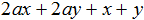
Показать решение
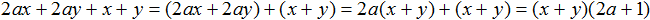
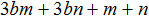
Показать решение
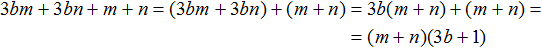
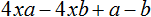
Показать решение
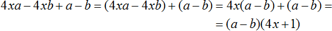
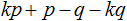
Показать решение
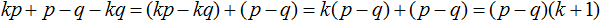
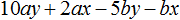
Показать решение
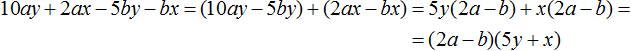
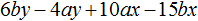
Показать решение
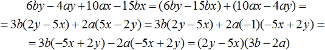
Показать решение
Показать решение
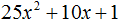
Показать решение
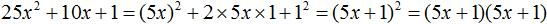
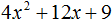
Показать решение
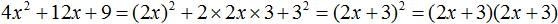
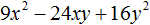
Показать решение
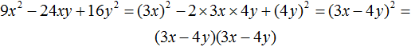
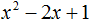
Показать решение
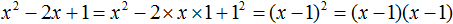
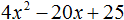
Показать решение
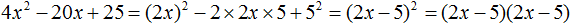
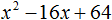
Показать решение
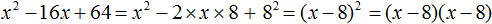
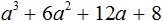
Показать решение
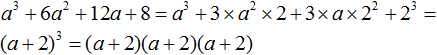
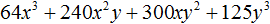
Показать решение
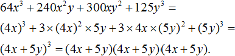
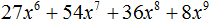
Показать решение
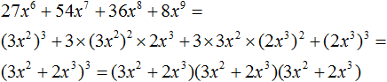
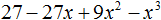
Показать решение
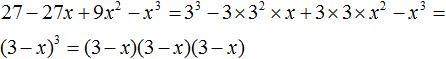
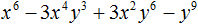
Показать решение
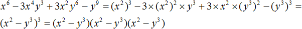
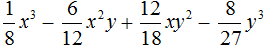
Показать решение
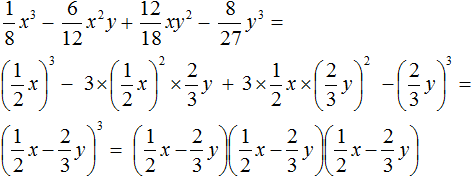
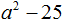
Показать решение
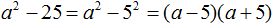
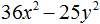
Показать решение
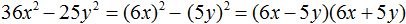
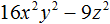
Показать решение
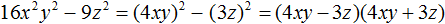
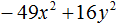
Показать решение
Показать решение
Показать решение
Показать решение
Показать решение
Показать решение
Показать решение
Показать решение
Показать решение
Показать решение
Показать решение
Показать решение
Показать решение
Показать решение
Показать решение
Показать решение
Показать решение
Показать решение
Показать решение
Показать решение
Показать решение
Показать решение
Показать решение
Показать решение
Показать решение
Показать решение
Показать решение
Показать решение
Показать решение
Показать решение
Показать решение